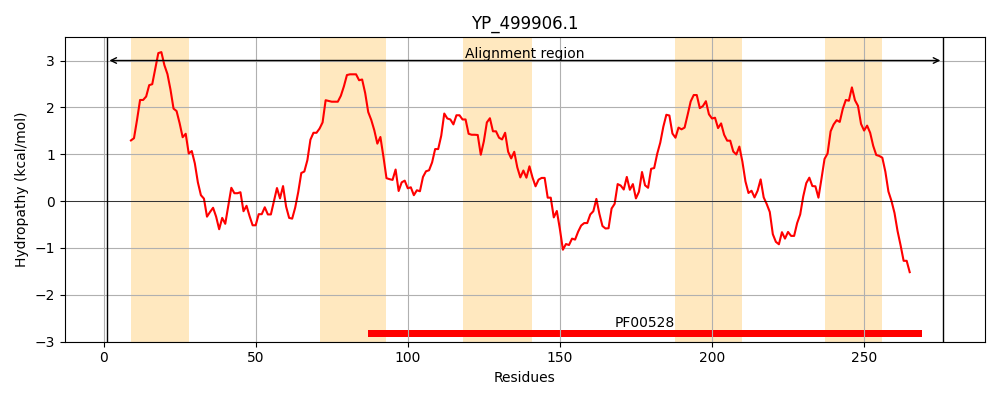
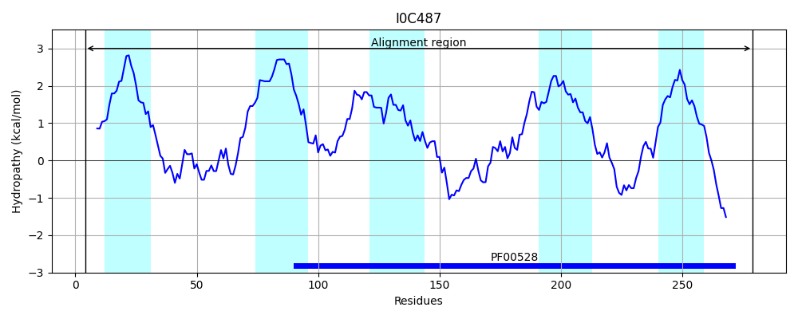
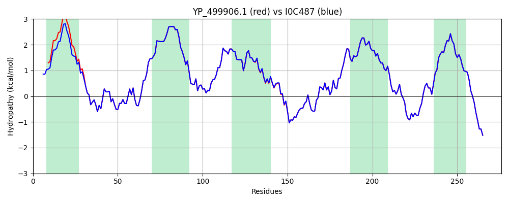

Hit Accession: I0C487
Hit TCID: 3.A.1.5.33
Hit Description: gnl|BL_ORD_ID|5216 gnl|TC-DB|I0C487|3.A.1.5.33 NikC OS=Staphylococcus aureus subsp. aureus 71193 GN=ST398NM01_1381 PE=3 SV=1
Mach Len: 276
e:0.000000
Query TMS Count : 5
Hit TMS Count: 5
TMS-Overlap Score: 5.500000
Predicted Substrates:CHEBI:25517;nickel(2+)
BLAST Alignment:
Score: 1377 , Bit scores: 535 bits, E-value: 0.0e+00, Alignment length: 276, Percentage identity: 99
Query: 1 MHKIFSKNNLIFFVFVAFIFVVIVLQFFVSSENATKVNLSQTFEPISWLHLLGTDDYGRDLFTRIIIGARSTLFVTVLTLIAIVVIGVTLGLFAGYKKGWIERLVLRFIDVGLSIPEFIIMIALASFFQPSLWNLVISITLIKWMNYTRLTRSIVNSEMNKPYIKMAQLFHVPTRTILIRHLTPKIIPAIIVLMVVDFGKIILYISSLSFIGLGAQPPTPEWGAMLQQGRDFISSHPIMLIAPASVIAITILIFNLTGDALRDRLLKQRGEYDESH 276
MHKIFSKNNLIFFVF AFIFV+IVLQFFVSSENATKVNLSQTFEPISWLHLLGTDDYGRDLFTRIIIGARSTLFVTVLTLIAIVVIGVTLGLFAGYKKGWIERLVLRFIDVGLSIPEFIIMIALASFFQPSLWNLVISIT+IKWMNYTRLTRSIVNSEMNKPYIKMAQLFHVPTRTILIRHLTPKIIPAIIVLMVVDFGKIILYISSLSFIGLGAQPPTPEWGAMLQQGRDFISSHPIMLIAPASVIAITILIFNLTGDALRDRLLKQRGEYDESH
Sbjct: 4 MHKIFSKNNLIFFVFGAFIFVMIVLQFFVSSENATKVNLSQTFEPISWLHLLGTDDYGRDLFTRIIIGARSTLFVTVLTLIAIVVIGVTLGLFAGYKKGWIERLVLRFIDVGLSIPEFIIMIALASFFQPSLWNLVISITVIKWMNYTRLTRSIVNSEMNKPYIKMAQLFHVPTRTILIRHLTPKIIPAIIVLMVVDFGKIILYISSLSFIGLGAQPPTPEWGAMLQQGRDFISSHPIMLIAPASVIAITILIFNLTGDALRDRLLKQRGEYDESH 279 | Protein Hydropathy Plots: |
|---|
|  |  |
Pairwise Alignment-Hydropathy Plot:
|
|---|
|  |